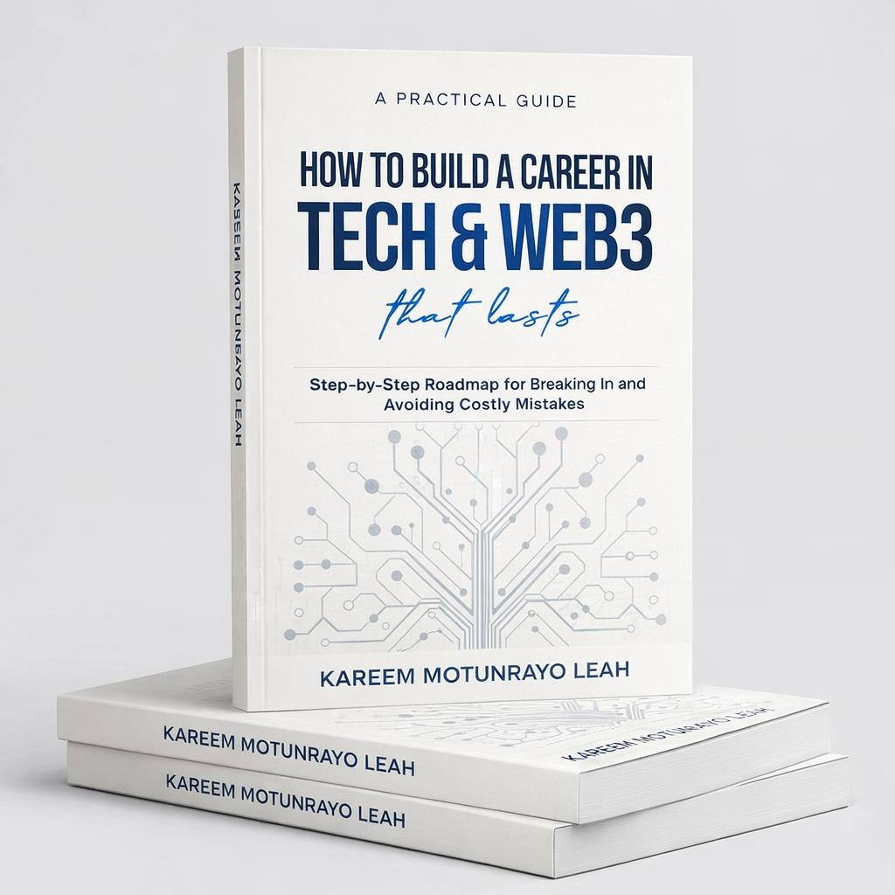

Applications are now open for the Third Cohort of our Tech Training & Career Growth Mentorship Program designed to help aspiring and struggling individuals build real, sustainable skills in Tech & Web3.
This program is designed to give you practical knowledge and hands-on skills in areas that make it easier to enter and grow in the Tech & Web3 space.
You will select at least one track (maximum of two) based on your interests, strengths, and long-term goals.
Learn how Tech & Web3 projects grow, attract users, and build communities.
You don't have to become "a marketer." You can specialize in any of these areas.
Understand projects, opportunities, and data inside the Tech & Web3 ecosystem.
Research is one of the most powerful skills in Tech & Web3.
For those who want to understand how things are built.
You won't just consume information.
Your life will be
completely transformed.
We expect demand for this cohort to exceed available seats. That is why we intentionally created a structured alternative — so your journey into Tech & Web3 does not depend on admission alone.
Because building a career that lasts should never be limited by selection.

This Book helps aspiring and struggling web3 professionals break into the space and build a long-term, sustainable career by providing structured knowledge, clear frameworks, and mentorship-driven guidance — rooted in real experience.
The principles in this book form the foundation of the framework we use inside TGM Web3 Institution.
This bonus is available only to pre-order buyers.
"TGM gave me the structure I desperately needed. I went from being completely lost in Web3 to landing my first community management role within 3 months."
"The mentorship is unmatched. I finally understand how the Web3 ecosystem works and I'm now earning from skills I built during the program."
"I was skeptical about free programs, but TGM proved me wrong. The curriculum, the community, the accountability — everything was world-class."
We expect demand for this cohort to exceed available seats. That is why we intentionally created a structured alternative — so your journey into Tech & Web3 does not depend on admission alone.
Because building a career that lasts should never be limited by selection.
This Book helps aspiring and struggling web3 professionals break into the space and build a long-term, sustainable career by providing structured knowledge, clear frameworks, and mentorship-driven guidance — rooted in real experience.
The principles in this book form the foundation of the framework we use inside TGM Web3 Institution.
This bonus is available only to pre-order buyers.
Web3 Marketing Specialist
Blockchain Developer
Research & Strategy Lead
Yes. There are no hidden fees.
Approximately 300 participants will be admitted into Cohort 3.
No. Beginners are welcome.
You can still access the book and foundational resources to continue building independently.
March 16th. Accepted participants will be notified in advance.
The choice is yours.